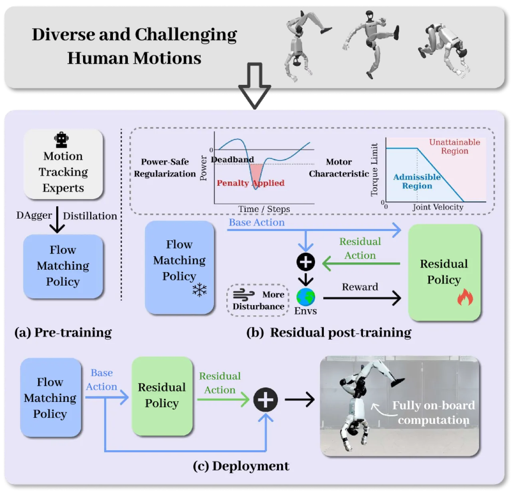
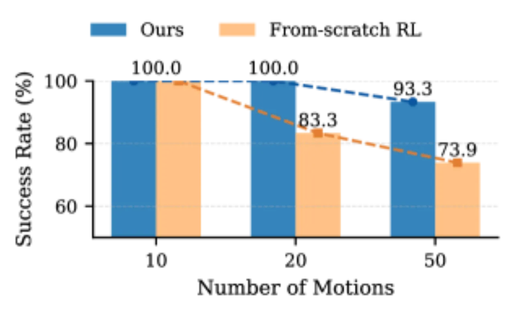
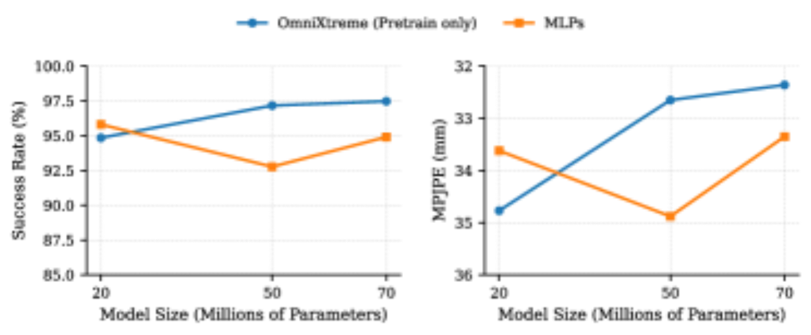
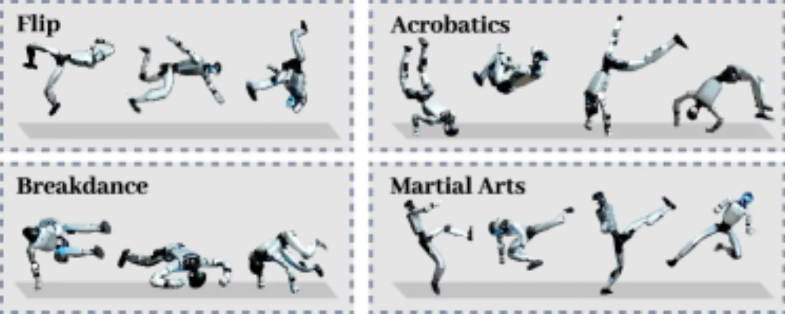

当前 humanoid 运动追踪面临"泛化壁垒"：motion library 规模一大，追踪保真度就会崩溃，尤其在高动态动作上。OmniXtreme 将通用运动技能学习与 sim-to-real 物理精调解耦——Phase 1 用 DAgger-based flow matching 聚合多专家先验，Phase 2 用 actuation-aware residual RL 将策略对齐到真机执行约束，在 Unitree G1 上以单一统一策略完成翻跟头、空翻、霹雳舞、武术等极限动作，157 次真机实验综合成功率 91.08%。
高保真运动追踪是检验 humanoid 运动技能泛化能力的"终极试金石"。但当 motion library 覆盖越来越多样的风格、接触状态与节奏模式时，追踪质量反而系统性下降，高动态动作尤甚。
"when we scale to larger, more heterogeneous motion libraries spanning diverse styles, contact regimes, and timing modes, motion tracking quality tends to degrade. Controllers become conservative and 'average,' break on the hardest motions, or prove brittle to the small deviations that inevitably occur in sim-to-real transfer."
作者将这一"泛化壁垒"归因于两个叠加障碍：

OmniXtreme 将多运动控制分为两个解耦阶段：Phase 1 以高容量 flow matching 模型建立可扩展的统一运动先验，绕开干扰密集的多运动 RL 优化；Phase 2 冻结 base policy，用轻量级残差策略在 actuation-aware 约束下对齐真机特性。
首先对每条运动单独训练 PPO 专家策略（teacher），数据来源涵盖 LAFAN1、AMASS、MimicKit 和 Reallusion，运动重定向至 Unitree G1。随后用 DAgger 从专家处蒸馏出统一 flow matching policy：
ℒFM(θ) = 𝔼[‖vθ(at, t, o) − (ε − aexpert)‖²]
速度场学习目标为 u = ε − aexpert，推理时通过前向 Euler 积分从噪声重建动作。预训练阶段采用"保真度保护型域随机化"（较小噪声水平，如关节位置噪声 ±0.01 rad），以避免对 base policy 的精度造成损害。高容量架构（Transformer/大 MLP）相比普通 MLP 有更强的容量可扩展性。
冻结 base policy 后，用轻量级 MLP 残差策略叠加修正动作：a = aflow + ares，经 PPO 优化。该阶段引入三项针对真机约束的关键机制：


评估在 Unitree G1 humanoid 上进行，仿真使用 LAFAN1 + XtremeMotion（约 60 条高动态运动）数据集，评估指标包括 MPJPE (mm)、Δvel (mm/frame)、Δacc (mm/frame²) 和 成功率（Succ）。真机实验涵盖 157 次试验、5 类技能。
| 方法 | LaFAN1+XtremeMotion MPJPE↓ | 成功率↑ | XtremeMotion MPJPE↓ | 成功率↑ |
|---|---|---|---|---|
| From-scratch RL | 47.95 | 82.95% | 54.19 | 79.45% |
| Specialist → Unified MLP | 33.35 | 94.91% | 43.43 | 89.22% |
| OmniXtreme（仅预训练） | 32.65 | 97.17% | 37.11 | 95.16% |
| OmniXtreme（完整） | 30.93 | 98.54% | 36.17 | 95.64% |
另：泛化到未见运动集成功率 89.54%（OmniXtreme 完整版）。
| 技能类别 | 试验次数 | 成功率 |
|---|---|---|
| Flip（翻跟头） | 55 | 96.36% |
| Handspring（手翻） | 35 | 88.57% |
| Acrobatics（杂技） | 15 | 80.00% |
| Breakdance（霹雳舞） | 22 | 86.36% |
| Martial arts（武术） | 30 | 93.33% |
| 合计 | 157 | 91.08% |

对后训练各机制的逐步消融（真机可执行性）显示：
结论："不同类别的高动态动作具有各自独特的失败模式，每种执行导向机制各自解决了互补的方面。"
真机部署中观察到少量失败案例，"主要发生在某些极限动作的高冲量着陆阶段，巨大的瞬态制动载荷触发了硬件保护机制，包括电机过流、功率限制或电池欠压事件"（原文）。这些动作在仿真和 sim-to-sim 中均可稳定执行，表明失败并非追踪精度或平衡丧失所致，而是揭示了"仿真致动模型与极端动态条件下真实硬件能力包络之间的残余差距"（原文）。
当前后训练冻结 flow-based base policy，仅训练轻量级残差 MLP。"虽然这种设计提供了稳定性和采样效率，但也可能限制大型 flow-based 模型的全部表示容量被进一步适应到硬件特定约束的程度"（原文）。未来可探索直接微调完整 base policy 的后训练策略。
作者指出，进一步提升极限动作鲁棒性需要"对真实致动器和电源系统限制进行更全面的建模，包括力矩、速度、电流、功率流和电池电压动态的耦合效应，这些在仿真中仍难以精确捕捉"（原文）。
结论节指出，"联合扩展数据多样性和模型容量对于增强全身 humanoid 运动技能的泛化能力至关重要"（原文），是未来研究的主要方向。